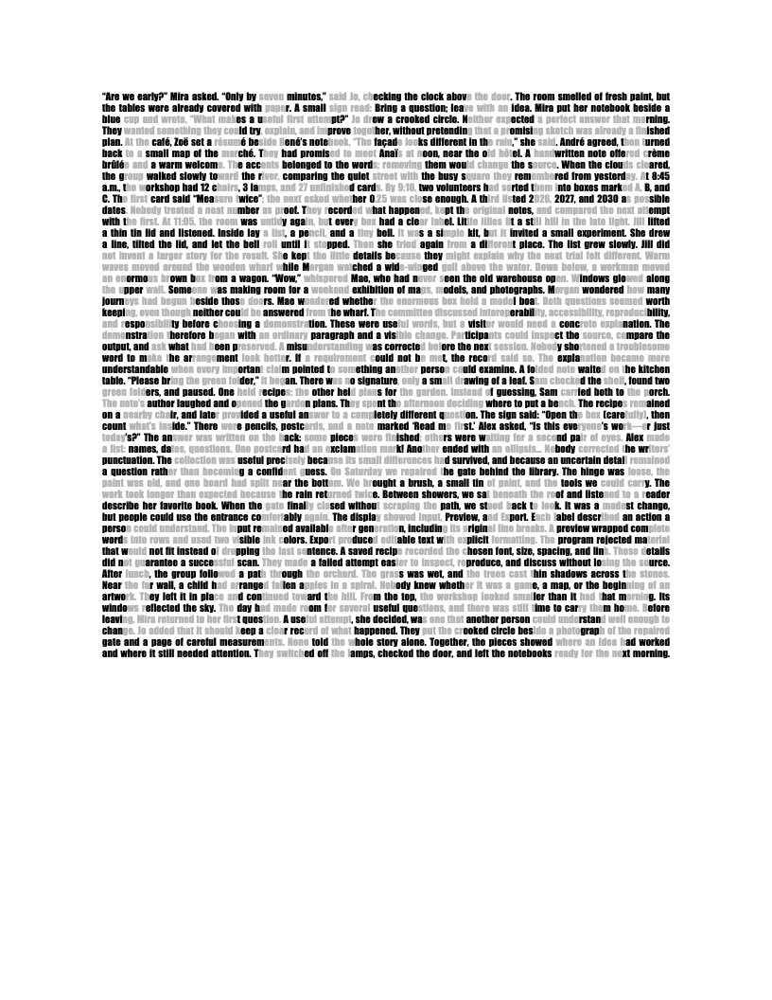
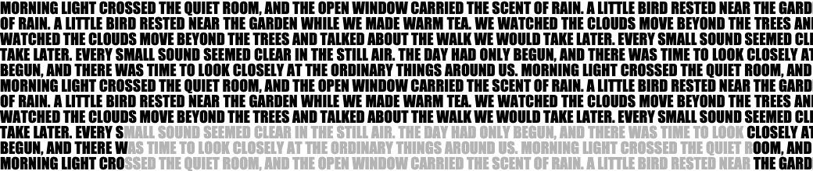
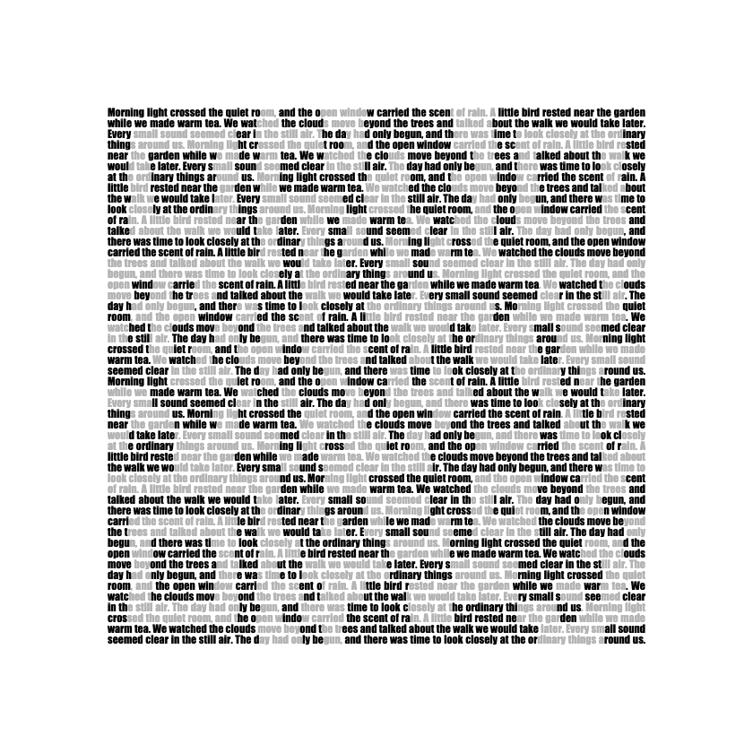
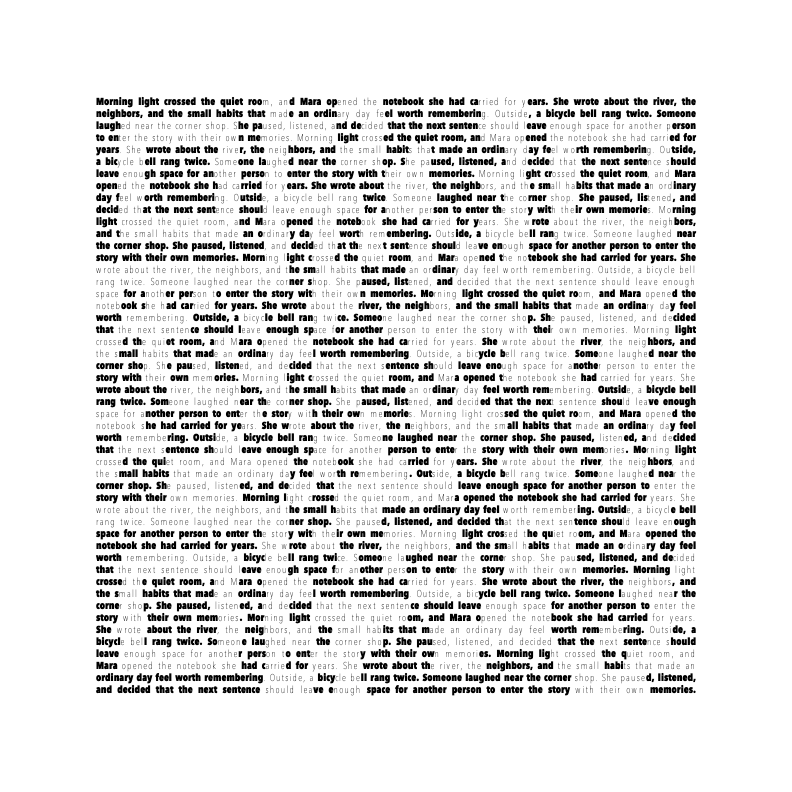
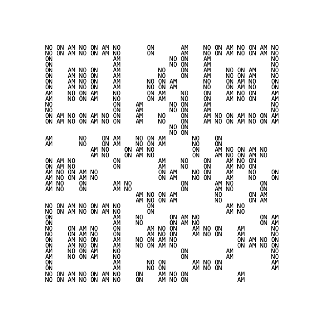
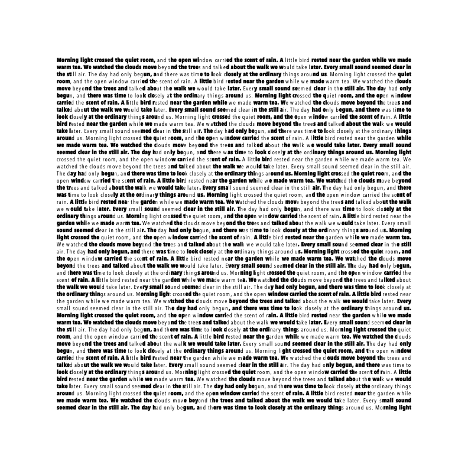

Can prose be a QR code?
Aqrobat draws QR codes with characters. This side project asks a harder question: can ordinary, readable prose, text you can select and copy, also be a QR code that a phone camera scans?
Research notes, last experiment October 11, 2026. Every example encodes https://example.com/.
Short answer: yes, but not invisibly. Prose scanned on a phone when each letter was set in one of two tones, dark or light, so the tones draw the code. Uniform prose that looks ordinary never scanned.
What scanned
The text stays real text: selectable, copyable words in a standard font. Which letters are dark and which are light carries the code, the way dark and light squares do in an ordinary QR code.




What didn't
- Words placed on a QR grid. Short words filled the dark squares and blanks or light words filled the rest. None of 474 renders decoded, even though they look like QR codes.
- Uniform text. One color and one weight, with the corner markers built from letters. Dozens of rounds produced a single software decode, of a repetitive test text.
- Fixed prose, bold or regular per letter. For the passages tested, the error correction math ruled it out: the best arrangement left at least 42 wrong codewords in a block, and the code can repair 14.
- Too little contrast. Heavy against regular weight failed, and so did gray letters only slightly darker than ones that scanned.
- Plain text files. A .txt file drops the styling that carries the code.


Can it be hidden?
Not so far. Everything that scanned shows its code as visibly two-tone letters, and nothing that read as ordinary prose scanned. A camera needs contrast it can find, and contrast is exactly what makes the pattern noticeable. That is a finding from a limited set of experiments, not a proof that hidden prose is impossible.
What it costs
- The type is small and dense, so it reads like fine print.
- Short text has to repeat to fill the code.
- Files are large: the Word page image is 283,532 bytes, against 3,344 for an ordinary QR image of the same link.
How it was checked
Software readers (jsQR, ZXing, OpenCV, and Apple Vision) checked the renders for the exact link. Phone results come from one Samsung phone, using its camera app and its QR scanner app, with the examples shown on a screen. No example has been tested in print, on other phones, or in Google Docs.
What comes next
- A fixed set of varied passages, with some held back to test on.
- A layout search that never rewrites the text or shortens the link.
- Scan checks on the actual output, with every pass and failure recorded.
- PNG, Word, and styled-text exports from one layout.
- Then other scripts and fonts, lower contrast, and print.